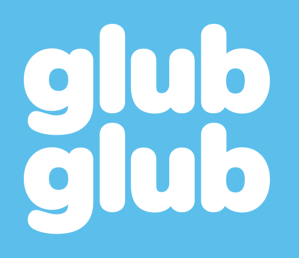

Suporte
Dúvidas, problemas, sugestões ou denúncias de perfis do ranking: escreva para a gente. Respondemos em até 24 horas.
ra-prado@hotmail.comRestaurar o Pro
O Pro é uma compra única. Para recuperar num iPhone novo, abra Perfil > Seja Pro e toque em "Já comprei: restaurar", com o mesmo Apple ID da compra.
App Saúde
O GlubGlub só grava a água no app Saúde, nunca lê. Para ligar ou desligar, use a chave "App Saúde" em Perfil ou Ajustes > Saúde > Acesso a Dados e Dispositivos > GlubGlub.
Aviso da meta
Ligue em Perfil > Lembretes. Ele toca às 19h só se a meta do dia ainda não chegou. Se não aparecer, confira Ajustes > Notificações > GlubGlub.
Ranking e perfis
Aparecer no ranking da cidade é opcional e começa desligado. No perfil de outra pessoa, use "Denunciar" ou "Bloquear". Denúncias são analisadas em até 24 horas.
Apagar a conta
Em Perfil, toque em "Apagar conta e dados". Seu perfil e seus totais saem do servidor na hora.
Support
Questions, problems, ideas or reports about ranking profiles: write to us. We reply within 24 hours.
ra-prado@hotmail.comRestore Pro
Pro is a one-time purchase. To get it back on a new iPhone, open Profile > Go Pro and tap "Restore", using the same Apple ID you bought it with.
Health app
GlubGlub only saves water to the Health app and never reads from it. To turn it on or off, use the "Health app" switch in Profile or Settings > Health > Data Access & Devices > GlubGlub.
Goal alert
Turn it on in Profile > Reminders. It goes off at 7 PM only if you haven't reached your goal yet. If it doesn't show up, check Settings > Notifications > GlubGlub.
Ranking and profiles
Showing up in the city ranking is optional and off by default. On someone else's profile, use "Report" or "Block". Reports are reviewed within 24 hours.
Delete your account
In Profile, tap "Delete account and data". Your profile and totals are removed from our server right away.